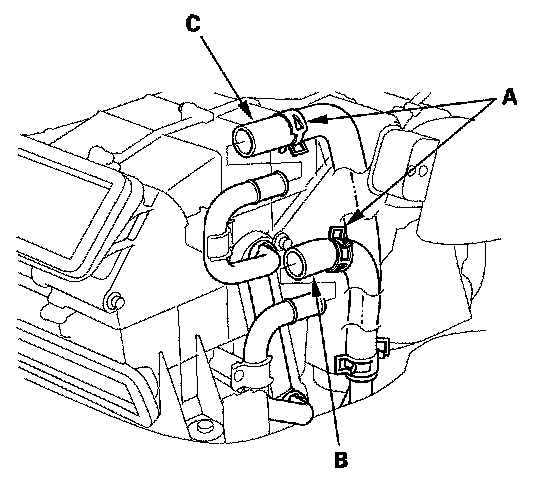
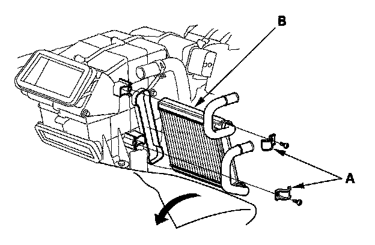

Heater Core: Service and Repair
Rear Heater Core ReplacementSRS components are located in this area. Review the SRS component locations and the precautions and procedures before doing repairs or service.
1. When the engine is cool, drain the engine coolant from the radiator.
2. Remove the center console.

3. Slide the hose clamps (A) back, then disconnect the rear inlet heater hose (B) and the rear outlet heater hose (C) from the rear heater core. Note the orientation of the hose.
Engine coolant will run out when the hoses are disconnected; drain it into a clean drip pan. Be sure not to let coolant spill on the electrical parts or the painted surfaces. If any coolant spills, rinse it off immediately.

4. Turn over the carpet. Remove the self-tapping screws and the clamps (A). Carefully pull out the rear heater core (B) without bending lines.
5. Install the unit in the reverse order of removal, and note these items:
- Do not interchange the inlet and outlet heater hoses, and install the hose clamps securely.
- Refill the cooling system with engine coolant.
- Make sure that there is no coolant leakage.
- Make sure that there is no air leakage.